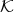

We wish to stress that one does not need to know a theorem in order to discover it using the techniques in this paper. Any method which assumes that all of the hypotheses can be stated algebraically and that all of the hypotheses are known at the beginning of the computation will be of limited practical use. For example, since the Gröbner Basis algorithm only discovers polynomial equations which are algebraically true and not those which require analysis or topology, the use of this algorithm alone has a limited use. Insights gained from analysis during a computer session could be added as (algebraic) hypotheses while the session is in progress. Decisions can take a variety of forms and can involve recognizing a Riccati equation, recognizing that a particular square matrix is onto and so invertible, recognizing that a particular theorem now applies to the problem, etc. The user would then have to record and justify these decisions independently of the computer run. 5 While a strategy allows for human intervention, the intervention must follow certain rigid rules for the computer session to be considered a strategy.
The idea of a prestrategy is :
The above listing is, in fact, a statement of a 1-prestrategy. Sometimes one needs a 2-prestrategy in that the key is equations in 2 unknowns.
The point is to isolate and to minimize what the user must do. This is the crux of a prestrategy.
The prestrategy described above is a loop and we now discuss when to exit the loop.
The digested equations (those in items O1, O2 and O3) often contain the necessary conditions of the desired theorem and the main flow of the proof of the converse. If the starting polynomial equations follow as algebraic consequences of the digested equations, then we should exit the above loop. The starting equations, say {p1 = 0,…,pk1 = 0}, follow as algebraic consequences of the digested equations, say {q1 = 0,…,qk2 = 0}, if and only if the Gröbner Basis generated by {q1,…,qk2} reduces (in a standard way) the polynomial pj to 0 for 1 ≤ j ≤ k1. Checking whether or not this happens is a purely mechanical process.
When one exits the above loop, one is presented with the question of how to finish off the proof of the theorem. We shall call the steps required to go from a final spreadsheet to the actual theorem the “end game.” We shall describe some “end game” technique in §16.3.4. We shall illustrate the “end game” in §14.4 and §17.4. As we shall see, typically the first step is to run NCProcess2 whose output is a very small set of equations.
We mentioned earlier that NCProcess uses the Gröbner Basis algorithm. This GBA is implemented via the command NCMakeGB. If NCProcess consisted of a call to the GBA and the formatted output (§15.2) alone, then NCProcess would not be a powerful enough tool to generate solutions to engineering or math problems. This is because it would generate too many equations. It is our hope that the equations which it generates contain all of the equations essential to solution of whatever problem you are treating. For the problems we have considered, this has been our experience. On the other hand, it contains equations derived from these plus equations derived from those derived from these as well as precursor equations which are no longer relevant. That is, a GB contains a few jewels and lots of garbage. In technical language a GB is almost never a small basis for an ideal and what a human seeks in discovering a theorem is a small basis for an ideal. 6 Thus we have algorithms and substantial software for finding small (or smallest) sets of equations associated to a problem. The process of running GBA followed by an algorithm for finding small sets of equations is what constitutes NCProcess.
We have just given the basic ideas. As a prestrategy proceeds, more and more equations are digested by the user and more and more unknowns become knowns. Thus we ultimately have two classes of knowns: original knowns 0 and user designated knowns U. Often a theorem can be produced directly from the output by taking as hypotheses the existence of knowns U ∪0 which are solutions to the equations involving only knowns.
Assume that we have found these solutions. To prove the theorem, that is to construct solutions to the original equations, we must solve the remaining equations. Fortunately, the digested equations often are in a block triangular form which is amenable to backsolving. This is one of the benefits of “digesting” the equations.
An example, makes all of this more clear.